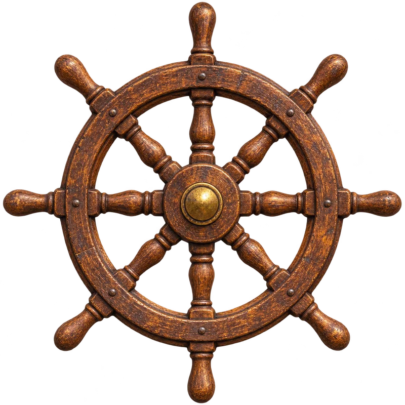

Июнь 1770 года. «Индевор» идёт внутри Большого Барьерного рифа к устью реки, где можно починить корабль.
Крути штурвал кнопками ◀ ▶, стрелками на клавиатуре или пальцем прямо по колесу. Обходи рифы, островки и светлые мели. Цель — флажок «Река Индевор» впереди; мини-карта в углу покажет, где препятствия.